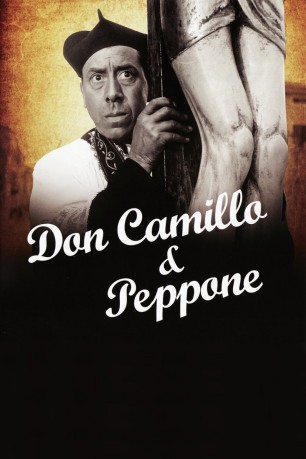
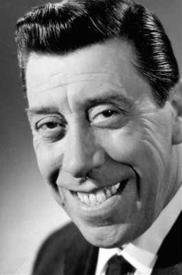
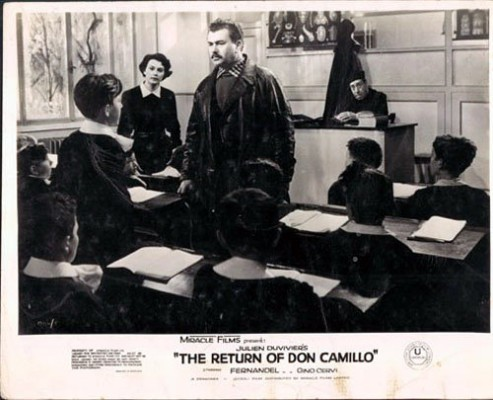
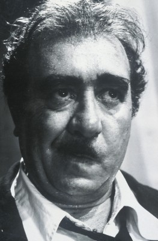

#933 Don Camillo und Peppone 1
Alternativ: The Little World of Don Camillo (Englischer Titel)
 
 IMDB-Wertung: 7.7 / 10
IMDB-Wertung: 7.7 / 10  Metascore: 0
Metascore: 0 
Italienisch-französische Koproduktion aus dem Jahr 1952. Don Camillo, ein katholischer Pfarrer, und Peppone, ein kommunistischer Bürgermeister, streiten über den richtigen Weg für ihr kleines Dorf. Dabei bleibt es nicht bei Wortgefechten - die beiden werden auch schnell handgreiflich.
Jahr: 1952
Dauer: 107 Minuten
FSK: 12
Land: Italien Studio: Kinowelt Home EntertainmentTonspuren:
Untertitel: Deutsch,
Auflösung: 1080p (1440x1080) Größe: 8140 MB
Genre: Komödie
Regisseur: Julien Duvivier
Drehbuch: Giovanni Guareschi, Julien Duvivier, René Barjavel, Oreste Biancoli
Soundtrack: Alessandro Cicognini
Darsteller:
-  Fernandel als Don Camillo
-  Gino Cervi als Giuseppe 'Peppone' Bottazzi
- Franco Interlenghi als Mariolino della Bruciata
- Sylvie als Signora Cristina
-  Saro Urzì als Brusco
- Vera Talchi als Gina Filotti
- Charles Vissières als Il Vescovo
- Clara Auteri Pepe als
- Italo Clerici als
- Peppino De Martino als
- Carlo Duse als
- Manuel Gary als Il delegato
- Leda Gloria als Signora Bottazzi
- Luciano Manara als Filotti
- Armando Migliari als Brusco
- Giovanni Onorato als
- Franco Pesce als
- Mario Siletti als Stiletti
- Olga Solbelli als
- Marco Tulli als Lo smilzo
- Gualtiero Tumiati als Il nonno
- Emilio Cigoli als Narrator , uncredited
- Barbara Florian als Bit part , uncredited
- Dina Romano als Una vecchietta , uncredited
- Ruggero Ruggeri als Crocefisso , uncredited
Datei: X:\5-Pentalogie(A-Z)\Don Camillo und Peppone\Don Camillo und Peppone 1 (1952, FSK12, 1440x1080).mkv seit 22.04.2015
Festplatte: HD Collection-3(N-Z)-6(A-Z)
 Es gibt insgesamt 8 Filme in der Gruppe '5-Pentalogie(A-Z)\Don Camillo und Peppone'
Es gibt insgesamt 8 Filme in der Gruppe '5-Pentalogie(A-Z)\Don Camillo und Peppone'